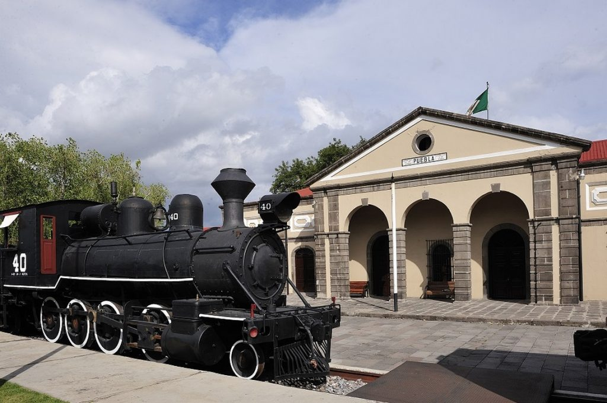

Museo
História
Museo Nacional de los Ferrocarriles Mexicanos: 28 años por la cultura y el patrimonio ferroviario Por más de 30 años, la historia, la magia y la nostalgia han poblado los espacios de los antiguos patios de maniobra y servicio de las estaciones del Ferrocarril Mexicano y del Mexicano del Sur, construidas en el siglo XIX. En este sitio privilegiado, el Museo Nacional de los Ferrocarriles Mexicanos rescata, conserva, estudia y difunde el legado ferrocarrilero desde su apertura el 5 de mayo de 1988.
Locomotoras, carros de pasajeros, coches de carga y cabuses animan desde entonces, un entorno de por sí suyo en el movimiento incansable del Museo.
Recreación, academia y educación confluyen en actividad permanente para todos. Libros, música, charlas con especialistas y arte ocupan todos los rincones. Los trenes y sus objetos avivan la imaginación: el pasado se recrea en recorridos dramatizados y las exposiciones son pretexto y motor para el encuentro con la cultura y la historia de la industria en México.
En 1999 el Museo Nacional de los Ferrocarriles Mexicanos, pasó a formar parte del Consejo Nacional para la Cultura y las Artes y posteriormente quedó conformado como Centro Nacional para la Preservación del Patrimonio Cultural Ferrocarrilero, albergando así a dos áreas sustantivas: el propio Museo y el Centro de Documentación e Investigación Ferroviarias.
Estaciones
La ciudad de Puebla tuvo un papel central en el desarrollo de los ferrocarriles mexicanos, pues en ella se establecieron cuatro estaciones: la del Ferrocarril Mexicano, la del Mexicano del Sur, la del Interoceánico y la llamada Nueva Estación, las cuales transformaron la fisionomía y cotidianeidad de la capital poblana, pero también y sobre todo permitieron el transporte de mercancías y pasajeros con las ciudades de México, Oaxaca y Veracruz.
De las cuatro estaciones, hoy sólo se conservan las del Ferrocarril Mexicano, ahora sede del Museo Nacional de los Ferrocarriles Mexicanos y la Nueva Estación, la cual sigue operando de manera exclusiva para el transporte de carga.
La Antigua Estación del Ferrocarril Mexicano, es un elegante edificio de estilo neoclásico, que fue inaugurada en 1869 por el presidente Benito Juárez y convertida en Museo el 5 de mayo de 1988, a iniciativa de la empresa Ferrocarriles Nacionales de México. Asimismo, por ser un edificio del siglo XIX, fue declarada por el INAH como monumento histórico.